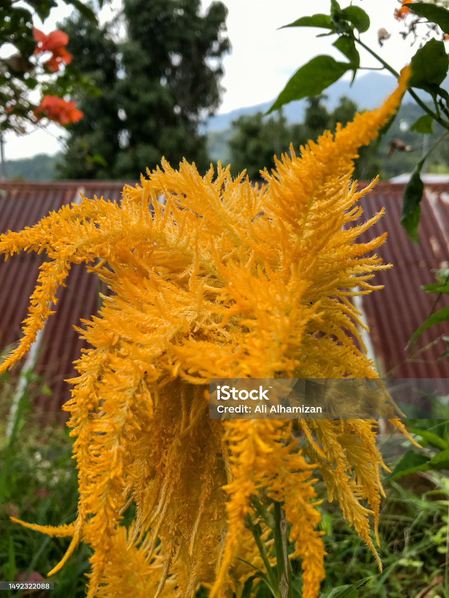
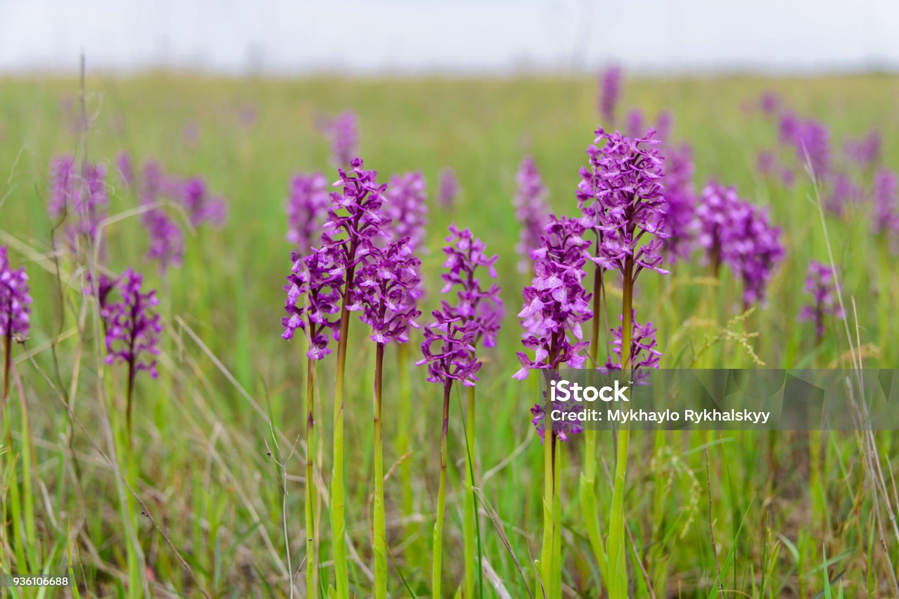

Growth in the details
The GreenTech story
Discover our roots, hello were GreenTech a company dedicated to cultivating a sustainable future through innovative solutions and eco-friendly technology.
GreenTech was founded in 2020 by a group of passionate environmentalists and tech enthusiasts who shared a vision of creating a greener, more sustainable world. What started as a small startup has blossomed into a leading company in the green technology industry, providing innovative solutions to businesses and communities worldwide.
Our journey has been fueled by a commitment to sustainability, innovation, and social responsibility. We have developed a range of products and services that help reduce environmental impact, promote renewable energy, and support sustainable practices across various industries.
At GreenTech, we believe that every small step towards sustainability can lead to significant positive change. Our mission is to empower businesses and individuals to make eco-friendly choices and contribute to a healthier planet for future generations.
Founded in the high deserts of New Mexico, GreenTech has grown from a small team of visionaries to a global company with a presence in over 20 countries. Our innovative solutions have been recognized for their impact on reducing carbon footprints and promoting sustainable development.
As we continue to grow and innovate, we are deticated to bridging the gap for small to medium-sized businesses, providing the necessary tools and resources to implement sustainable practices and reduce their environmental impact. We are proud of our journey so far and excited for the future as we continue to cultivate a greener tomorrow, one innovation at a time.
Join us on our journey as we continue to grow and innovate, cultivating a sustainable future for all.
Our Story in Bloom
Explore the key milestones in GreenTech's journey towards cultivating a sustainable future.
- 2020:The Seed is Planted
- 2022:Branching Out
- 2025:Full Blossom
- 2028:Nature-Driven Solutions
- 2030:Recognition in Bloom
- 2033:Communities That Flourish Together
GreenTech is founded by a group of environmentalists and tech enthusiasts in New Mexico.
Launch of our first product, a solar-powered irrigation system for agriculture.
Our global Expansion into international markets, establishing a presence in Europe and Asia.
Introduction of eco-friendly packaging solutions to reduce plastic waste.
>for our impact on reducing carbon footprints and promoting sustainable development.
GreenTech Garden initiative, promoting urban gardening and sustainable living.
Meet the Visionaries Behind the Growth
Sequoia Evergreen
Co-Founder & Chief Executive Officer
Sequoia Evergreen grew up in France, surrounded by countryside woodlands, botanical gardens, and a deep cultural appreciation for ecology and natural science. Her favorite plant lavender is admired for its longevity, resilience, and ability to stand as a living record of time and growth. From a young age, she showed extraordinary academic ability paired with an intense curiosity about the natural world. Her early life was shaped by tragedy after losing her parents at a young age. She was raised by her uncle, a university professor specializing in environmental sciences, and her aunt, a traveling beekeeper who studied pollination systems across Europe. Their influence instilled in her both scientific discipline and a deep respect for interconnected ecosystems. Sequoia graduated with her first doctorate in Environmental Systems Analysis at the age of 19. She went on to complete additional doctoral studies in Climate Science and Policy at leading universities in the United Kingdom, followed by advanced research programs at Harvard University and the University of California, Berkeley, focusing on sustainable innovation, ecological economics, and global environmental strategy. She is credited with holding five advanced doctoral-level qualifications across environmental science, policy, systems design, and sustainability economics, making her one of the most distinguished interdisciplinary thinkers in her field. At GreenTech Solutions, she serves as Co-Founder and Chief Executive Officer, guiding the company’s vision, scientific integrity, and global impact strategy. Her leadership is defined by the belief that innovation must always work in harmony with nature, ensuring that technological progress strengthens rather than disrupts the planet’s ecosystems.

Wilhelmina Greene
Co-Founder & Chief Development Officer
Wilhelmina Greene grew up in Canada, surrounded by sprawling forests and sparkling lakes that nurtured her deep appreciation for nature. From an early age, her family instilled in her a strong commitment to environmental stewardship, actively engaging in land conservation efforts and reforestation projects aimed at preserving the natural beauty of their surroundings. Wilhelmina's natural leadership abilities became evident during her childhood, where she excelled at rallying her peers around ecological causes and initiatives. Every year, her grandmother dedicated community botanist would guide her in planting a tree on her birthday, a cherished tradition that cultivated in Wilhelmina a lifelong commitment to environmental advocacy.Her grandmother affectionately nicknamed her “Twig,” symbolizing both Wilhelmina’s deep bond with the plant world and her resilient spirit. This unique relationship inspired her to pursue a higher education focused on environmental issues. Wilhelmina studied Environmental Engineering and Sustainable Product Design. Her academic journey culminated in advanced research on green infrastructure development and circular economy systems, where she explored innovative ways to create sustainable solutions for urban environments. As the Co-Founder and Chief Development Officer of GreenTech Solutions, Wilhelmina plays a pivotal role in shaping the future of environmental technology. She spearheads the development of scalable solutions that prioritize sustainability and environmental impact. Through her leadership, GreenTech Solutions focuses on ensuring that innovative technologies are not only groundbreaking but also practical and implementable for communities and industries across the globe.
Cedar Schneider
Co-Founder & Chief Technology Officer
Cedar Schneider was born and raised in the picturesque region of Bavaria, Germany, where the stunning alpine terrain and diverse high-altitude ecosystems profoundly influenced his early interests. Surrounded by the breathtaking landscapes, he developed a fascination with natural systems, structural integrity, and the resilience of life in harsh conditions. The edelweiss, a plant that thrives in the rugged mountains and symbolizes purity and strength, became his favorite; it resonated with his engineering mindset and appreciation for nature's ingenuity. From a young age, Cedar was captivated by mechanics. He dedicated countless hours to dismantling various machines and gadgets, often rebuilding them with a deeper understanding of their inner workings. This hands-on experience allowed him to cultivate an early intuition for complex systems and how they operate, laying the groundwork for his future endeavors. Cedar pursued his passion academically, earning a degree in computer science followed by a specialization in environmental systems engineering. This unique combination equipped him with the skills to integrate technical architecture with innovative ecological solutions, preparing him for a career at the intersection of technology and environmental stewardship. Now, as the Chief Technology Officer at GreenTech, Cedar oversees the development of software, data infrastructure, and engineering strategies. His leadership ensures that all technological systems are not only scalable and efficient but also environmentally optimized for maximum impact. Honing his technical skills but also deepened his commitment to sustainability.
Karim Youssef-Lotus
Chief Sustainability Research Officer
Karim Youssef-Lotus grew up in Egypt, where he developed a deep appreciation for nature and family values. He cherished the time spent with his father along the banks of the Nile River, whether they were casting nets to catch fish or gliding across the tranquil waters in a felucca sailboat. Observing how communities relied on natural water cycles for survival and growth. After their outings, one of their favorite rituals was to collect papyrus flowers, which they would bring home to brew fragrant tea for the entire family. This instilled in Karim a sense of responsibility toward nurturing relationships and valuing the small joys of life. He keeps a dried papyrus flower in his wallet as a cherished memento. He later pursued studies in environmental science and sustainable agriculture, focusing on arid-region ecosystems and climate adaptation strategies. Before joining GreenTech Solutions, Karim worked on international water sustainability projects across the Middle East and North Africa.Today, Karim serves as the Chief Sustainability Research Officer at GreenTech Solutions, where he dedicates his efforts to developing innovative and environmentally friendly technologies. He is committed to promoting sustainable practices that not only protect the Earth but also contribute to a better future for generations to come.Through his work, he aims to inspire others to embrace sustainability, just as he embraced the traditions that shaped him.
Irving Mussheron
Chief Financial Officer
Irving Mussheron spent her formative years in India, where her family was deeply involved in military life, serving with the Western Air Command in New Delhi. Growing up in this structured environment, she learned the values of discipline, resilience, and adaptability. From an early age, Irving displayed a keen interest in numbers and statistics, nurtured by her father, who shared his enthusiasm for data analysis and American baseball. He introduced her to the intricacies of performance statistics, sparking her fascination with patterns, data interpretation, and the stories numbers can tell. This early exposure laid the foundation for her analytical mindset and equipped her with the skills necessary for a career in finance.Irving has a special fondness for marigolds, which evoke cherished memories of the summers she spent in Mexico with her grandmother. These vibrant flowers symbolize not only beauty but also her deep connections to family traditions and cultural heritage.Irving pursued her academic interests further by studying finance and economic systems, with a special focus on sustainability-driven investment strategies. She recognized the importance of integrating financial practices with sustainable development to positively impact both communities and the environment. Before taking on her current role at GreenTech Solutions, Irving gained extensive experience in international financial consulting. In this capacity, she assisted various organizations in creating transparent and scalable financial frameworks, allowing them to thrive in competitive and ever-changing markets.Today, as the Chief Financial Officer at GreenTech Solutions, Irving plays a vital role in overseeing global financial operations and payment infrastructure
Rowan Prairie
Chief Operations Officer
Rowan Prairie grew up in the heart of Wisconsin, a region known for its expansive farmland and rich agricultural heritage. From an early age, he was immersed in the world of dairy farming, which has been a cornerstone of his family's legacy for generations. In an effort to enhance agricultural practices in his community, Rowan and his father developed an innovative system designed to connect local farmers with critical crop research data. This initiative aimed to improve crop yields and foster sustainable farming techniques, which contributed to the overall health of their agricultural ecosystem. Rowan's passion for agriculture expanded beyond local borders when he moved to Taiwan. There, he gained invaluable international experience working in technology-driven agriculture, where he focused on emerging agricultural practices and innovations. Rowan was instrumental in developing cross-border agricultural distribution systems aimed at enhancing food sustainability. His expertise in supply chain optimization and logistics allows him to effectively manage the complex web of global operations. During his time in Taiwan, he met his future wife, Orchid, who shared his dedication to improving global agricultural systems.Today, as the Chief Operating Officer of GreenTech Solutions, Rowan plays a crucial role in steering the company’s operations. Under his leadership, GreenTech Solutions is expanding its global presence, focusing on bringing innovative agricultural technologies to diverse markets.
Orchid Chen
Chief Designer & Marketing Officer
Orchid was born and raised in Taiwan, immersed in the vibrant world of floristry through her family's longstanding business. his early exposure to a kaleidoscope of colors, intricate designs, and the beauty of natural aesthetics greatly influenced her artistic sensibilities. Among the many flowers her family cultivated, her favorite was the iris. This flower, rich in symbolism, represents creativity, and wisdom. Driven by her passion for art and design, Orchid pursued formal studies in design, branding, and visual communication. Before becoming a pivotal part of GreenTech Solutions, Orchid gained valuable experience at various creative agencies. In these roles, she developed impactful campaigns aimed at raising awareness about ecological issues and fostering innovations related to climate change. Her work not only showcased her design skills but also highlighted her commitment to making a difference in the world. Her position of Chief Designer & Marketing Officer at GreenTech Solutions. She plays a crucial role in shaping the brand’s identity, leading the creative direction, and ensuring that the company's message is communicated effectively. As she embarks on a new chapter in her personal life, Orchid, formerly known as Orchid Chen, is preparing to take on the surname Prairie after her upcoming wedding to Rowan Prairie this spring.
Aloe Ndlovu
Community Outreach Director
Aloe Ndlovu grew up in the vibrant landscapes of South Africa, where her childhood was deeply intertwined with nature. Much of her early life was spent helping her grandmother tend to royal gardens bursting with a diverse array of native plants and herbs. Among the many plants that surrounded her, the King Protea, South Africa’s national flower, captured her heart. This remarkable flower is celebrated for its resilience, thriving in tough conditions while displaying a breathtaking beauty. She became heavily involved in local urban gardening initiatives and youth environmental programs, advocating the belief that significant change begins at the grassroots level. Recognizing the power of education, Aloe committed herself to nurturing the next generation’s understanding of environmental dynamism. Currently, Aloe serves as the Community Outreach Director at GreenTech Solutions, where she spearheads a range of innovative programs aimed at promoting sustainable living. One of her flagship initiatives, the GreenTech Garden, focuses on expanding enviromental knowledge in a way for the youth of today to understand. Fostering a collective commitment to preserving the planet for future generations.
Mayumi “Maple” Sato
Renewable Energy Engineer
Mayumi Sato grew up in Japan, where she was surrounded by the breathtaking beauty of seasonal forests and majestic mountain landscapes.One of her favorite plants, the sakura tree, symbolizes beauty, transience, and the idea of renewal, all of which resonate with her personal philosophy. From a young age, Mayumi demonstrated her individuality and creativity, earning the nickname “Maple” from her family. This unique moniker stemmed from her unusual habit of adding maple syrup to her matcha tea, a combination that initially perplexed those around her but ultimately became a beloved quirk. She would frequently spend her time sketching serene natural landscapes, infused with intricate mechanical designs. This passion led her to pursue a degree in renewable energy engineering, where she concentrated on sustainable power systems and the integration of cutting-edge environmental technologies into everyday practices. Mayumi gained valuable experience working on numerous solar and wind energy projects across Asia. Now, as a Renewable Energy Engineer at GreenTech Solutions, Mayumi plays a pivotal role in designing innovative clean energy systems. Her work is instrumental in facilitating the global shift toward sustainable infrastructure, allowing communities to embrace greener energy solutions while minimizing their environmental impact.
Pine Korhonen
Cybersecurity Lead and Infrastructure Manager
Pine Korhonen was raised in Finland, a region known for its challenging cold climate. This environment instilled in him a strong sense of resilience and honed his problem-solving skills, traits that became crucial in his daily life. One of Pine's favorite flowers is the pasqueflower, renowned for its delicate yet vibrant colors that provide a striking contrast against the harsh, white snow of early spring. Throughout his childhood, Pine faced the challenges of living with acute asthma, which heightened his sensitivity to cold air and the shifting seasons. His grandfather, who was the village doctor, played a significant role in his upbringing. He often filled their home with pasqueflowers, both for their soothing presence and as a metaphor for enduring difficult conditions. Pine’s early interest in technology was sparked by his grandfather, who introduced him to the world of electronics repair. Together, they would take apart old radios, gaming consoles, and computers, discovering how these systems worked.Driven by his growing fascination with technology, Pine pursued formal education in cybersecurity and infrastructure engineering, where he focused on digital protection and system resilience. Today, Pine serves as the Cybersecurity and Infrastructure Lead at GreenTech Solutions, where he is entrusted with the critical task of protecting the company’s software, payment systems, and environmental data. As he implements strategies that shield these vital components from cyber threats. Prior to his current position at GreenTech Solutions, Pine held several information security roles, where he was responsible for protecting critical infrastructure systems from various vulnerabilities. His extensive experience has equipped him with the skills needed to navigate complex cybersecurity challenges.

Flora Mendes
Head of Global Partnerships, Legal & International Sustainability Compliance
Flora Mendes grew up in Brazil, where she spent a significant part of her childhood exploring the breathtaking landscapes near the Amazon rainforest.As she engaged in activities like hiking, birdwatching, and learning about the diverse region. Flora has a special connection to the plume flower, a plant known for its delicate, feather-like appearance. It serves as a vivid reminder of Carnival in Brazil, a festival characterized by vibrant colors, spirited movement, and a strong sense of celebration. The energy and unity she experienced during these festivities reflect her belief in the importance of collaboration and community. Driven by her love for nature and a desire to protect it, Flora pursued higher education in environmental law and international sustainability policy. Throughout her studies, she focused on understanding regulatory frameworks and fostering global partnerships that can lead to meaningful environmental change. She gained valuable experience by working with various international organizations, where she was responsible for ensuring environmental compliance and negotiating cross-border sustainability agreements. Flora serves as the Head of Global Partnerships, Legal, and International Sustainability Compliance. She plays a crucial role in building strategic alliances with a range of stakeholders, including other organizations, government entities, and non-governmental organizations (NGOs). Aiming to amplify GreenTech's impact in the sustainability sector and ensure that all initiatives align with the company's mission and core values, ultimately contributing to a more sustainable and equitable world.
Adrian Kovač
Lead Software Developer
Adrian Kovač grew up in Slovenia, a country renowned for its stunning alpine landscapes, crystal-clear rivers, and rich cultural heritage rooted in engineering and precision. Among the various elements of nature that inspired him, his favorite flower, the tulip, stands out, badmired not only for its striking beauty but also for its remarkable resilience and ability to thrive across seasons.One of the most formative experiences of Adrian's childhood was visiting the Arboretum Volčji Potok, a renowned botanical garden located just outside Ljubljana. This expansive garden is celebrated for its vibrant tulip displays in the spring, alongside meticulously designed natural landscapes. Despite his early love for learning, Adrian faced significant obstacles. He grew up illiterate and often struggled in traditional educational settings that did not cater to his unique learning style. However, his discovery of coding marked a pivotal turning point in his life. Fascinated by the world of programming, he began to teach himself various programming languages. In doing so, he not only acquired valuable technical skills but also gradually learned to read and comprehend written language. This journey of self-education transformed his self-esteem and opened doors to new educational and professional opportunities, turning problem-solving into a powerful catalyst for personal growth. Adrian pursued formal studies in software engineering and system design, dedicating himself to understanding scalable platforms and environmental data systems. Honing his skills by creating software solutions that facilitated better data management and sustainability practices. At GreenTech, he now holds the position of Lead Software Developer working collaboratively with engineering and cybersecurity teams.
Sage Hollis
Impact Measurement & ESG Reporting Lead
Sage Hollis grew up in the picturesque landscapes of Australia, where she was surrounded by expansive rolling green farmland and thriving eucalyptus forests. Her passion for nature was deeply influenced by her upbringing near Nabowla, a quaint town in northern Tasmania, which is renowned for the Bridestowe Lavender Estate. The historic plantation that boasts one of the largest lavender fields in the world. From an early age, Sage exhibited a keen fascination with the intricate patterns and relationships found in nature. She spent countless hours observing how even minor environmental changes could have significant effects on soil health, crop yields, and local wildlife populations throughout the changing seasons. This early curiosity laid the foundation for her academic journey, leading her to pursue studies in environmental analytics and sustainability metrics. Dedicating herself to understanding how data can be leveraged to measure real-world ecological impacts in a way that is both meaningful and transparent. She developed comprehensive reporting systems designed to track land restoration initiatives and biodiversity recovery efforts, helping to monitor the success of various conservation strategies. Currently, Sage holds the position of Impact Measurement and ESG Reporting Lead at GreenTech Solutions. Designing and managing advanced systems that evaluate the environmental performance of the company’s initiatives. Her commitment to ensuring that sustainability claims are underpinned by accurate data and measurable outcomes is paramount.

Juncus Wei Tan
Head of Research & Development
Juncus Wei Tan was raised in the Netherlands, a country renowned for its innovative “cities in a garden” concept, which harmoniously blends nature, urban design, and infrastructure. One of the most pivotal experiences of his childhood was his parents’ active participation in the Bloemencorso Zundert, commonly known as the Zundert Flower Parade. This world-famous festival is characterized by a fierce competition among 20 local hamlets, each dedicated to spending nearly a full year planning, designing, and constructing extraordinary sculptures made entirely from flowers, which are showcased on moving floats. Witnessing and assisting in the preparation process provided Juncus with invaluable insights into large-scale collaboration, the intricacies of design thinking, and the profound impact of community-driven creativity.His fascination with nature is reflected in his favorite plant, the orchid tree. This plant represents the ideas of harmony and interconnectedness in growth. His colleagues affectionately refer to him as “Jun,” a nickname that reflects not only camaraderie but also his approachable and supportive nature. He is recognized for his ability to adapt to challenges quickly and for his innovative approach to problem-solving, which often leads to novel solutions. Currently, at GreenTech Solutions, Jun holds the position of Head of Research and Development. By bridging the gap between theory and practice, Jun plays a vital role in ensuring that GreenTech remains a leader in eco-innovation, contributing to the development of environmentally sustainable technologies that address pressing global challenges.
Bloom Bennett
Head of Environmental Policy & Advocacy
Bloom Bennett grew up in the vibrant and dynamic environment of New York City, where the intricate relationship between urban ecosystems and innovative green infrastructure projects significantly shaped her interests. Her favorite plant, the chrysanthemum, symbolizes resilience and represents the ecological balance she hopes to achieve in urban settings.She completed her education by earning three doctoral degrees in Environmental Design and Urban Sustainability, International Environmental Policy, and Global Urban Planning. Her research focused on how to effectively integrate architecture, city systems, and ecological design to contribute to the creation of greener and more sustainable urban environments. Building a solid foundation in public policy research and urban environmental initiatives. Her professional experience included working with various organizations that aimed to improve urban living conditions and foster sustainable practices within communities. Her insights into the complex interactions between policy, society, and the environment prepared her well for a leading role in environmental advocacy.At GreenTech Solutions, Bloom serves as the Head of Environmental Policy and Advocacy, leading the development of comprehensive sustainability guidelines that not only serve as frameworks for organizational practices but also influence the way cities approach ecological design. She collaborates closely with governments and international organizations to ensure that the company’s innovations not only meet but exceed global environmental standards.